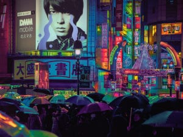
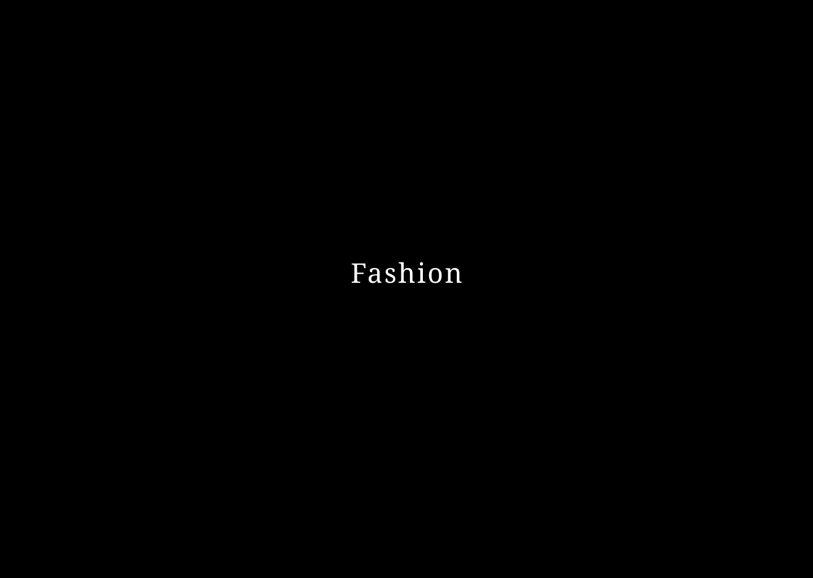
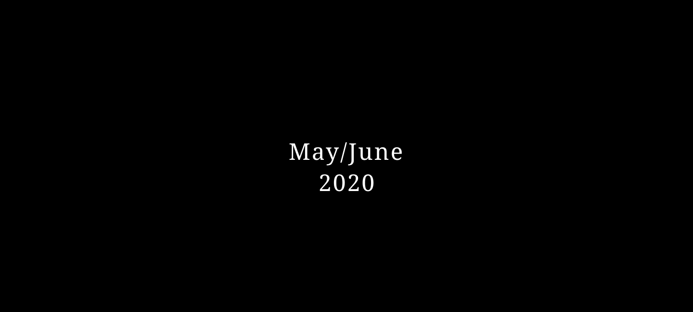
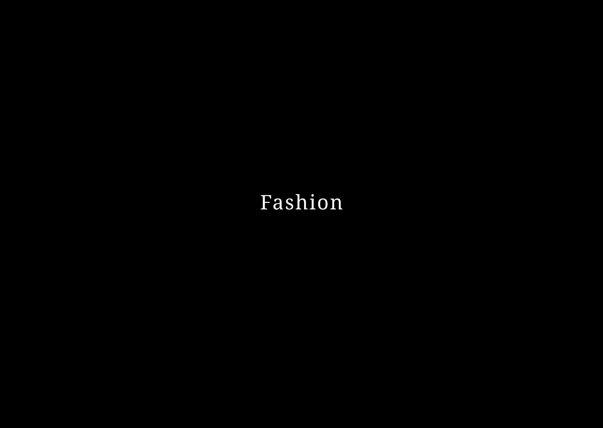
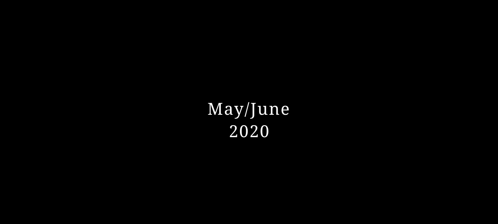

Journey Into Midnight
Liam Wong’s photographs are deeply influenced by the visual identities of video games, utilising vibrant colours, open landscapes and cyberpunk imagery.

 



Liam Wong’s photographs are deeply influenced by the visual identities of video games, utilising vibrant colours, open landscapes and cyberpunk imagery.
Through creative direction, set design and visual storytelling, Daphne Westland explores the boundaries between surrealism and the everyday.
What does it mean to be an activist? How can we use social media? In the age of Instagram, Houston Center for Photography considers visual identities.
The capsule is described by Palace as “an affectionate homage” to EVISU’s prominence within the London club scene during the late ’90s and early 2000s.
Design is systematic and methodical; it is creative and collaborative. Studio Gang considers the kinds of buildings we need for the near-future.
Michael Oliver Love’s images provide an outburst of colour, texture and energy, complementing and enhancing one another as a celebration of movement.